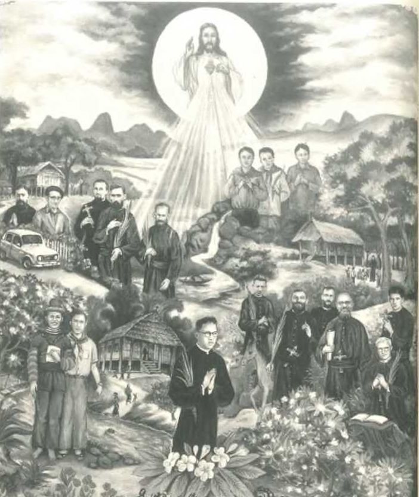

Hasta aquí llegan los testimonios de algunos de estos mártires de Laos, testigos de la fe. Sus historias impresionan y, a la vez, animan a vivir el Evangelio con mayor fidelidad. Hemos podido conocer algunos detalles de sus vidas y experimentar su cercanía humana, histórica y eclesial. Todos ellos estaban animados por un espíritu común, que hemos descubierto, especialmente, mediante el Diario del P. Mario Borzaga. A él dejamos la palabra, nuevamente, transcribiendo la última meditación encontrada en su cuaderno de un cura de campo, símbolo de su mística: sencilla, sincera, anhelante de la gracia del Señor. Nos parece un sugerente y bello recuerdo de tantas vidas entregadas por amor a Jesucristo, servicio de la Iglesia y salvación de las almas.
Meditaciones matutinas y del atardecer...
Porque yo medito en todas partes, también en la iglesia. Podría parecer una presunción, de todos modos. Sería hermoso ser contemplativo. Dios y sus misterios están por todas partes, dentro y fuera de mí. Dios me mira y me escucha en todas partes. El me echa de menos. Siente como si no estuviera. Siente que no correspondo a su Gracia. Entonces me llama. Pero si no estoy, no respondo. Mientras tanto, el sol siempre está alto en el cielo y el mundo, devastado por todo tipo de oscuridad, está lleno de luz. Habíamos dicho que se llevaba el amor a un mundo de odio y que portábamos el interés por Dios a un mundo que carece de dicho interés. Pero el Sacrificio de la Misa permanece firme en mi Altar, Jesús cumple su Sacrificio y, sin embargo, yo no cumplo con el mío.
Todo es silencio dentro de mí, porque no hablo de Dios. Entonces, cuando no soy capaz de hablar, abro la Escritura y leo la palabra de Dios: la palabra de Dios es suficiente. Primera carta del apóstol san Juan. Asegura ser testigo de la Vida del Verbo. Testimonio de la Vida de la Palabra. Os anuncio lo que he oído, lo que he visto y admirado, lo que he tocado con las manos de la Vida del Verbo.
Realmente son meditaciones del atardecer y de la mañana, que no leeré nunca, por ser feas. Me gustaría todo lo que es bello y santo. Me gustaría ser muy Sacerdote. La confesión no es tan difícil, pero cuando las almas vienen a mí y me suplican que las ayude a ser mejores, a evitar el pecado, a que les dé la fuerza para corregirse, siento ganas de huir del confesionario con desesperación: entonces hay que ser santos. Tener tanta Gracia, tanta Gracia para dar. ¿Por qué el que va a confesarse normal con el P. Pío se convierte, deja la vida de pecado, y el que viene a confesarse conmigo recibe la Gracia por un minuto, pero luego naufragará otra vez? Lo sé y es terrible. Es terrible no salvar almas cuando se podrían salvar muy fácilmente. Es terrible verlos ir a la muerte sin hacer nada por ellos, a pesar de que me han encargado salvarlos. En este punto soy malo. ¿Qué significa ser malo? Significa: no amar, odiar, lastimar a los demás. Soy uno de esos.
Jesús me ordenó que hiciera lo contrario, y yo le había prometido que haría lo que me ordenara. Pero pasa el tiempo y no hago nada, absolutamente nada. Solo la Fe me salva, solo la Fe y el Amor, y solo el que se santifica y se sacrifica por las almas, salva las almas. No hay excepción. Porque Jesús no pretende sustituir el método de la Cruz por otro método, porque no sería su método. Querer nosotros sustituirlos por otro método es una ilusión. Tanto es así que las almas que nos son confiadas no se salvan. Simplemente no en absoluto. Y el mundo está lleno de almas como el cielo de estrellas; y las almas son tan preciosas como las estrellas porque cuestan la Sangre de Jesús. En mi vida no quiero creer en nada excepto en el Amor de Jesús y el Amor de María. Estaré abandonado y triste, seré mediocre y pecador, pero creeré en el Amor. Creeré en el Amor a pesar de todo y haré todo lo posible para vivir el Amor, incluso plantado en medio de un bosque, tendido en el suelo como una hoja de higuera y abandonado. Jesús nunca me abandonará.
¿Por qué Juan pudo afirmar ser un testigo de la Vida del Verbo? ¿No era Sacerdote como yo? «Lo que he oído y visto os lo anuncio para que también vosotros participéis de nuestro Amor y nuestra comunidad sea con el Padre y con el Hijo Jesucristo. Y todo ello para nuestro pleno gozo». Así que debo ver, debo oír, debo tocar la vida de Jesús, debo constatarla, como la alegría más grande del mundo. Tengo que esperar a que Él hable, a que se haga ver y tocar en la acción de gracias de la Misa durante el sublime instante del Sacrificio. El Sacrificio que celebraré en unos momentos: ese Sacrificio que es un océano de Amor.
Es perfectamente inútil perder el tiempo lloriqueando, haciéndome el sentimentalista, soñando despierto. Nada, en verdad, nada. ¿Qué es la Caridad? Caridad es hacer Caridad, realmente no hay nada más. No hay nada hermoso excepto la belleza de Dios. No quiero mirar a ningún otro lado, sino a donde Dios está. Siento que estoy perdiendo el tiempo y tener esta impresión depende del simple hecho de que es verdad. Y nada hay más cierto que esto: que es muy difícil aprovechar todo el tiempo.
—No, así no se ama a las almas; no hago nada por ellos, pero me aman.
— Señor, di a todo el Paraíso que no te amo, pero que te he amado mucho.
La vida del beato Mario Borzaga, relatada por él mismo en el diario que hemos recorrido, recuerda al vídeo de promoción de la campaña del Domund del año 2012, titulado El misionero responde. En una simulada rueda de prensa al llegar al aeropuerto, un misionero llamado Ramón, que ha salvado a varias niñas de un orfanato durante una inundación, responde a varias preguntas. La última es: «con el corazón en la mano, ¿eres feliz?». La respuesta dada podría ser un buen corolario para la vida del beato Mario Borzaga, autor del Diario de un hombre feliz: «La felicidad es algo muy difícil de valorar. Piensa que convivo todos los días con la pobreza más grande del mundo: niños desnutridos, enfermedades, zonas contaminadas, desesperación... Pero sus caras son siempre de absoluta sorpresa, porque nosotros no predicamos un Dios ajeno a sus necesidades, sino un Dios que quiere lo mejor para ellos. Un Dios que quiere que, en esta vida, vivan un inicio de la vida eterna. ¿Feliz? La verdad es que no sé si soy feliz..., pero no cambiaría mi vocación por nada del mundo».

BEATIFICADOS EL 11 DE DICIEMBRE DE 2016
POR EL PAPA FRANCISCO EN VIENTIANE,
CAPITAL DE LAOS
José Thao Tien, de 36 años, sacerdote diocesano del Vicariato Apostólico de Thanh Hóa, nació el 5.12.1918 en Muang Xói (Houaphan), mártir el 2.06.1954 en Ban Ta- lang, vicariato de Vientiane.
Juan Bautista Malo, de 54 años, sacerdote de las Misiones Extrajeras de París (MEP) en China y en Laos, nació el 2.06.1899 en La Grigonnais, diócesis de Nantes (Francia), mártir el 28.03.1954 en Yén Hoi (Vu Quang, Ha Tinh), diócesis de Vinh (Viét-nam).
René Dubroux, de 44 años, sacerdote diocesano de Saint-Dié (Francia) y después sacerdote de las Misiones Extranjeras de París, nació el 28.11.1914 en Haroué, diócesis de Nancy (Francia), mártir el 19.12.1959 en Palay, vicariato de Paksé.
Pablo Shiong Tho [Thoj Xyooj, Khamsé], de 19 años, laico catequista, nacido en 1941 en Kiukatiam (Louang Prabang), mártir el 1.05.1960 en Muang Kasy (hoy Provincia de Vientiane), vicariato de Louang Prabang.
Mario Borzaga, de 27 años, sacerdote misionero oblato de María Inmaculada, nació el 27.08.1932 en Trento (Italia), mártir el 1.05.1960 en Muang Kasy (ahora Provincia de Vientiane), vicariato de Louang Prabang.
Luis Leroy, de 36 años, sacerdote misionero oblato de María Inmaculada, nació el 8.10.1923 en Ducey, diócesis de Coutances (Francia), mártir el 18.04.1961 en Ban Pha (Xieng Khouang), vicariato de Vientiane.
Miguel Coquelet, de 29 años, sacerdote misionero oblato de María Inmaculada, nació el 18.08.1931 en Wig- nehies, diócesis de Cambrai (Francia), mártir el 20.04.1961 en Sop Xieng, vicariato de Vientiane.
José Outhay Phongphumi, de 28 años, viudo, catequista, nació en 1933 en Kham Koem, diócesis de Thare & Nongseng (Thailandia), mártir el 27.04.1961 en Phalane (Savannakhet), vicariato de Savannakhet.
Noel Tenaud, de 57 años, sacerdote de la Misiones Extranjeras de París en Siam y en Laos, nació el 11.11.1904 en Rocheserviére, diócesis de Luçon (Francia), mártir el 27.4.1961 en Phalane, vicariato de Savannakhet.
Vicente L’Hénoret, de 39 años, sacerdote misionero oblato de María Inmaculada, nació el 12.03.1921 en Pont l’Abbé, diócesis de Quimper (Francia), mártir el 11.05.1961 en Ban Ban / Muang Kham (Xieng Khouang), vicariato de Vientiane.
Marcelo Denis, de 40 años, sacerdote de las Misiones Extrajeras de París, nació el 7.08.1919 en Alen^on, diócesis de Séez (Francia), mártir el 31.07.1961 en Kham He (Gnommalath, Khammouane), vic. Savannakhet.
Juan Wauthier, de 40 años, sacerdote misionero oblato de María Inmaculada, nació el 22.03.1926 en Forniés, diócesis de Cambrai (Francia), mártir el 16.12.1967 en Ban Na (Xieng Khouang), vicariato de Vientiane.
Tomás Khampheuane Inthirath, de 16 años, alumno catequista, nació en mayo de 1952 en Nong Sim (Cham- passak), vicariato de Paksé, mártir el 12.05.1968 en Pak- song (Champassak), vicariato de Paksé.
Luciano Galan, de 47 años, sacerdote de las Misiones Extranjeras de París en China y Laos, nació el 9.12.1921 en Golinhac, diócesis de Rodez (Francia), mártir el 12.05.1968 en Paksong (Champassak), vicariato de Paksé.
José Boissel, de 59 años, sacerdote misionero oblato de María Inmaculada, nació el 20.12.1909 en Loroux, archi- diócesis de Rennes (Francia), mártir el 5.07.1969 en Hat I-Et (Bolikhamsay), vicariato de Vientiane.
Lucas Sy, de 32 años, padre de familia, catequista, nació en 1938 en Ban Pa Hók / Kung Hróng Tnéc (Xieng Khouang), mártir el 7.03.1970 en Déne Din (Prov. de Vientiane), vicariato de Vientiane.
Maisam Keo Pho Inpeng, de 36 años, padre de familia, nació hacia 1934 cerca de Sam Neua (Houaphan), mártir el 7.03.1970 en Dene Din (Provincia de Vientiane), vicariato de Vientiane.